¿Cómo y por qué cambia una galaxia?
Una galaxia no es una foto fija: es un sistema dinámico cuyo color cambia con el tiempo. Recorremos las cuatro componentes que vemos —estrellas, gas, polvo y el agujero negro central— y descubrimos por qué la tendencia natural de casi toda galaxia es enrojecerse… salvo que algo le inyecte gas nuevo.
Una galaxia cambia en el tiempo: ¿cómo y por qué? La clase anterior contamos galaxias; esta vez las miramos como objetos que evolucionan. La idea central es sorprendentemente simple de enunciar y rica de desarrollar: lo que vemos de una galaxia es la suma de la luz de sus componentes, y cada componente cambia con el tiempo. Las estrellas nacen azules y mueren rojas; el gas es el combustible que repone estrellas nuevas; el polvo enrojece todo lo que hay detrás; y el agujero negro central, cuando se alimenta, puede encandilar a la galaxia entera. Para alguien de informática, es un sistema con estado cuyo "color de salida" es la integral de muchas señales que entran y salen —un pipeline con realimentación (el ciclo bariónico) que determina la trayectoria del sistema.
¿Qué vemos cuando vemos una galaxia?
Lo que cambia es aquello que vemos: identifiquemos primero las componentes.
Antes de preguntar cómo cambia una galaxia, hay que fijar qué estamos mirando, porque lo que cambia es justamente lo que vemos. A grosso modo, una galaxia es una colección de estrellas, pero además puede tener otras tres componentes observables:
- Estrellas — lo que brilla y hace visible a la galaxia.
- Gas — material difuso; el combustible de las nuevas estrellas.
- Polvo interestelar — las franjas oscuras que cruzan el disco.
- Un AGN / QSO — un núcleo activo creado por un agujero negro supermasivo que está tragando material.
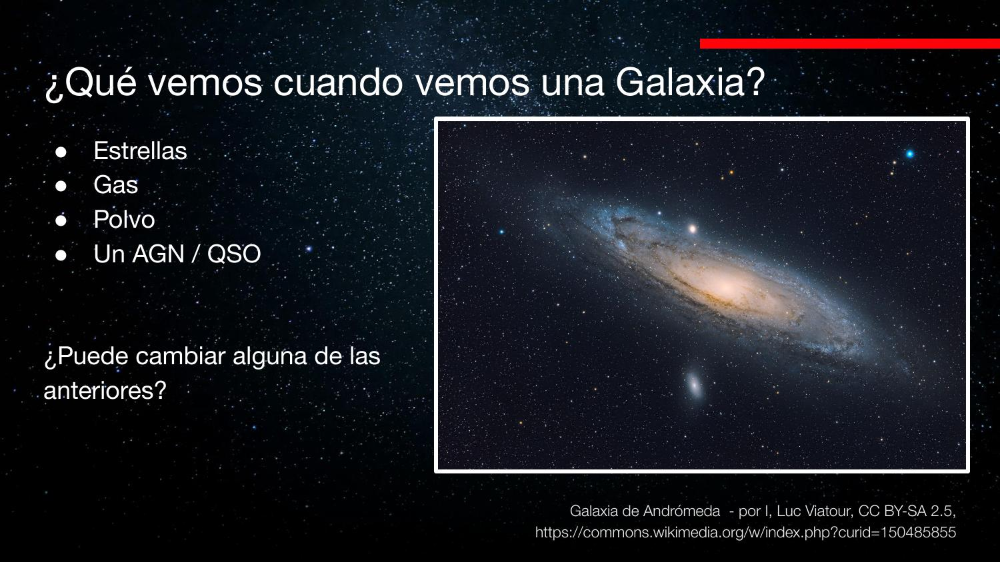
Hay además materia oscura: aproximadamente cinco veces más que toda la materia "normal". Pero no la vemos, así que sus cambios (en cantidad o distribución) no los podemos medir directamente a partir de cómo se ve la galaxia. Por eso la clase se concentra en las cuatro componentes visibles.
La luz observada es una suma (superposición) de señales de varias fuentes. "Cómo se ve" la galaxia es la integral de todas sus componentes; estudiar la evolución es entender cómo cambia cada término del sumando y su contribución relativa. La materia oscura es como una variable de estado no observable: afecta la dinámica (la gravedad), pero no aparece en la salida que medimos.
Estrellas: el diagrama color–magnitud
El color y el brillo de una estrella —y por extensión de una galaxia— dependen de su masa y su estado evolutivo.
Las estrellas son la componente visible dominante. Su color y su brillo total dependen de dos cosas: la masa de la estrella y el origen de su energía (su estado evolutivo). La herramienta para ordenarlas es el diagrama de Hertzsprung–Russell (o diagrama color–magnitud): en un eje, el color o la temperatura; en el otro, la luminosidad (o la magnitud absoluta).
La relación clave, quizá contraintuitiva: más caliente = más azul. Como en la llama de un fósforo, la parte más caliente (cerca de la madera) es azul y la más fría es naranja. Por eso, en el diagrama, las estrellas calientes y azules van a la izquierda y las frías y rojas a la derecha; la luminosidad crece hacia arriba.
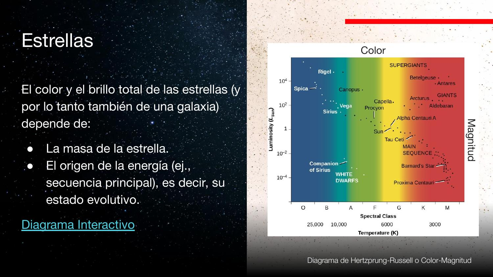
Las estrellas no se desparraman por cualquier lado: se agrupan en la secuencia principal, una banda curva donde vive la mayoría de la población. ¿Qué tienen en común? Su modo de fusión: están transformando hidrógeno en helio en el núcleo. Una estrella es una nube de gas en equilibrio entre dos fuerzas opuestas:
¿Dónde exactamente en la secuencia? Lo decide la masa: a más masa, más brillante y más caliente (más arriba y más a la izquierda). Hay una correlación directa entre brillo y temperatura a lo largo de la secuencia principal.
El diagrama color–magnitud es un scatter plot de una población donde aparecen clusters naturales (secuencia principal, gigantes, enanas blancas). No los impusimos: emergen de la física. Identificar en qué "cluster" cae una estrella es como un problema de clasificación no supervisada, y la posición a lo largo de la secuencia codifica una sola variable latente: la masa.
Evolución estelar: salir de la secuencia principal
Cuando a una estrella se le acaba el hidrógeno del núcleo, se mueve en el diagrama… siempre hacia el rojo.
Una estrella permanece en la secuencia principal mientras le quede hidrógeno en el núcleo. Cuando se agota, el equilibrio se rompe: ya no hay fusión central que sostenga la presión de radiación, así que la gravedad empieza a ganar y comprime el núcleo. Pero al comprimirse, una capa de hidrógeno externa al núcleo alcanza la presión necesaria para fusionarse. Esa fusión en cáscara infla la estrella: nace una gigante roja.
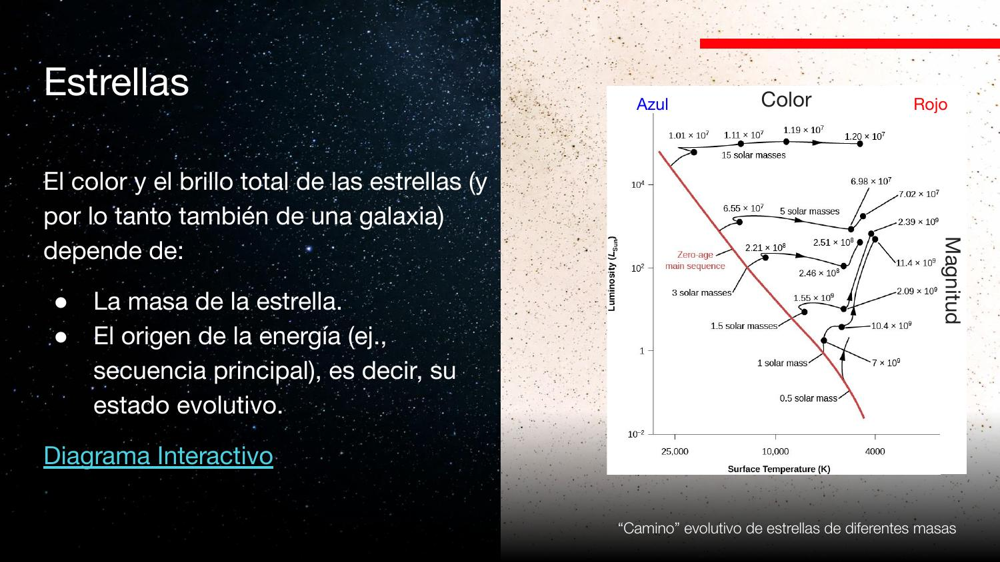
El mensaje cuantitativo está en los números junto a las curvas. La vida en la secuencia principal depende fuertísimo de la masa:
Hubo una pregunta sobre el Sol: su vida total en la secuencia principal es ≈ 10.000 millones de años; ya lleva ≈ 5.000 millones, así que le quedan otros ≈ 5.000 antes de transformarse en gigante roja. (El "10 millones" de algunas clases corresponde a estrellas mucho más masivas, no al Sol.)
Las enanas blancas: presión cuántica
Otra región especial del diagrama, abajo a la izquierda: las enanas blancas. Son el núcleo desnudo de lo que fue la estrella (en una como el Sol, ≈ 10% de su masa, comprimido a tamaño comparable a la Tierra). Ya no fusionan nada, entonces ¿qué frena la gravedad? El principio de exclusión de Pauli: dos partículas (electrones) no pueden ocupar el mismo estado cuántico. Esa presión de degeneración sostiene la estrella, y —cosa rara— casi no depende del tamaño: todas las enanas blancas tienen tamaño parecido.
Lo importante para la galaxia: a medida que pasa el tiempo, las estrellas se salen de la secuencia principal y se mueven hacia el rojo. Las azules (masivas) lo hacen primero; las rojas (poco masivas) tardan eones. Por eso la tendencia natural de una población estelar es enrojecerse.
La función inicial de masa (IMF)
¿Con qué color nace una galaxia? Pocas azules brillantísimas vencen a muchísimas rojas tenues.
Para saber con qué color parte una población estelar necesitamos la función inicial de masa (IMF, Initial Mass Function): la distribución de masas con que nacen las estrellas. Es análoga a la función de luminosidad de la clase pasada, pero para estrellas y referida al momento del nacimiento: dice cuántas estrellas nacen en cada rango de masa.
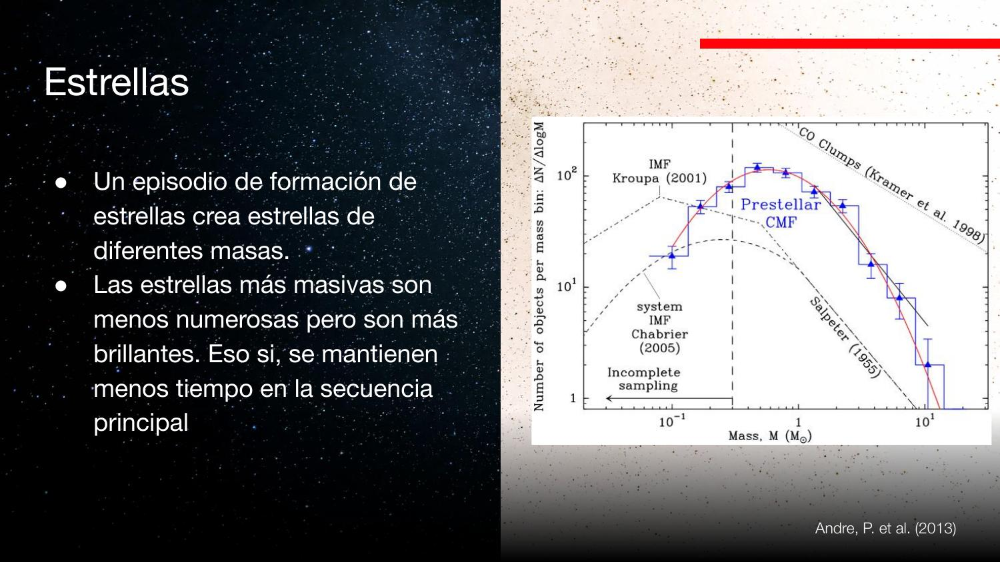
Hay un factor ≈ 10 más estrellas de 1 M☉ que de 10 M☉. Uno pensaría entonces que dominan las rojas (de baja masa). Pero hay que cruzar la IMF con el diagrama color–magnitud, y ahí aparece el truco: entre 1 M☉ y 10 M☉ hay un factor ≈ 10.000 en brillo.
El mensaje principal: cuando una galaxia recién convierte una nube de gas en estrellas, su color predominante es azul. Hay poquísimas estrellas azules, pero tan brillantes que dominan; y un montón de estrellas rojas tenues que apenas aportan. Con el tiempo, esas azules evolucionan y se enrojecen, así que la tendencia global es que la galaxia se vuelve roja —salvo que nazcan nuevas azules.
Es un caso clásico de promedio ponderado donde el peso domina sobre el conteo. Como en una métrica de latencia: pocas requests lentísimas (cola pesada) pueden dominar el tiempo total aunque sean minoría. Aquí, el "peso" es la luminosidad (factor 104) y vence al "conteo" (factor 10). Moraleja: nunca confundas cuántos hay con cuánto aportan.
El espectro de una galaxia: jóvenes vs viejas
Separar la luz por longitud de onda revela quién manda: las estrellas jóvenes en el azul, las viejas en el rojo.
Si descomponemos la luz de una galaxia por longitud de onda obtenemos su distribución espectral de energía (SED): cuánta luz sale a cada longitud de onda. El espectro total (curva negra) se puede separar en dos poblaciones:
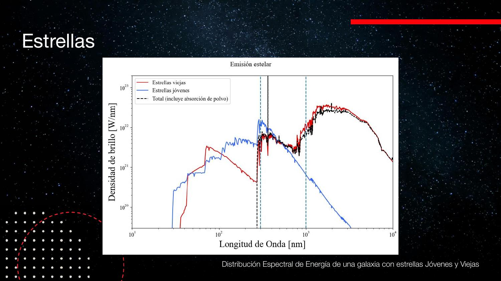
El rango clave: la mayor parte de la luz de las estrellas jóvenes y masivas se emite aproximadamente entre 912 y 4000 ångström (es decir, en el ultravioleta hasta el azul). Ese brillo está controlado por cuántas estrellas jóvenes hay: si no hay estrellas jóvenes, ese pedazo del espectro se apaga.
En el audio se menciona "1000 ångström", pero la diapositiva indica 912 ångström como límite inferior del rango UV de las poblaciones jóvenes. 912 Å es además el límite de Lyman del hidrógeno (la energía para ionizarlo), un valor con sentido físico, así que usamos el dato de la diapositiva.
La dinámica temporal se sigue de aquí: las estrellas masivas que pintan el azul viven solo ≈ 10 millones de años. Después mueren y se enrojecen, así que el azul se desvanece y la galaxia se ve roja… a menos que la formación estelar continua reponga estrellas masivas nuevas. Esto es exactamente lo que muestra la siguiente diapositiva de la clase: con formación estelar continua, nuevas estrellas masivas "rellenan" el brillo UV que de otro modo se perdería.
El profesor aclara: el color no determina la tasa de natalidad estelar. Lo que determina cuántas estrellas nuevas se forman es cuánto gas hay disponible para formarlas. El color es la consecuencia observable, no la causa.
La secuencia morfológica y los colores
Elípticas rojas a la izquierda, espirales azules a la derecha: ya podemos explicarlo.
Con lo anterior podemos leer la secuencia morfológica en clave de colores. A la izquierda, las galaxias elípticas: colores naranjos y rojos. A la derecha, las espirales: con sectores rojizos, pero un azul predominante, sobre todo en los brazos espirales.
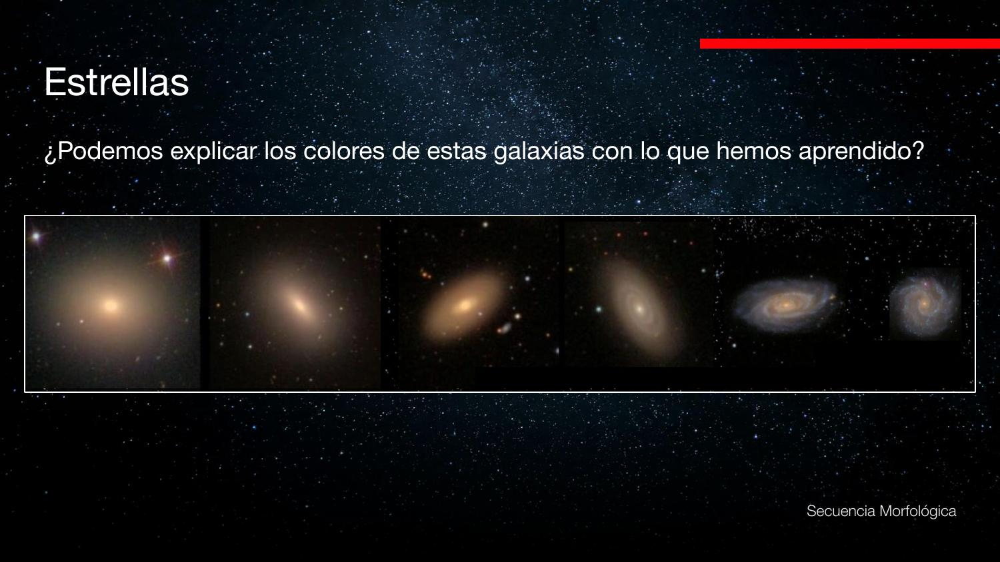
- Espirales (azules): el azul de los brazos delata estrellas jóvenes recién formadas que rellenan el rango 912–4000 Å. Hay formación estelar activa.
- Elípticas (rojas): no se ve ninguna mancha azul. Se dice que están "muertas": en el pasado formaron muchas estrellas, pero desde entonces evolucionan pasivamente sin formar poblaciones nuevas; las que tienen se enrojecen cada vez más.
¿Las elípticas perdieron toda su secuencia principal? No. Las estrellas de baja masa (≈ 0,5 M☉) viven más que la edad del universo (13.800 millones de años), así que ninguna galaxia ha agotado su secuencia principal: siempre queda el pedazo de abajo a la derecha (las rojas longevas). Lo que desaparece es la parte brillante y azul de arriba, que ya evolucionó.
El gas y el ciclo bariónico
El gas es el combustible de las estrellas nuevas. Su entrada, salida y reciclaje gobiernan la evolución del color.
El gas no domina el color de la galaxia directamente, pero sí domina algo más importante: la generación de nuevas poblaciones estelares. Es el combustible. Y viene mezclado con polvo. Cuando el gas se comprime —por ejemplo en una colisión de galaxias, donde una onda de choque gravitacional lo aprieta— se gatillan episodios extremos de formación estelar.
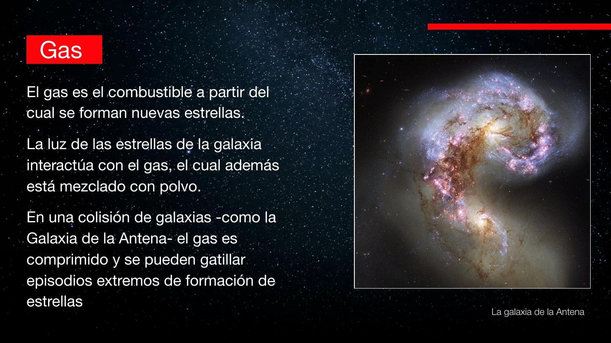
Pero el gas no está solo dentro de la galaxia: también llena el medio intergaláctico. Esto da una de las ramas más importantes del estudio de galaxias: el ciclo bariónico —el ciclo de la materia que no es materia oscura.
En rigor, un barión es una partícula formada por tres quarks (notablemente el protón y el neutrón). En astronomía, en cambio, se usa "materia bariónica" como sinónimo de toda materia que no sea materia oscura —incluyendo los electrones, que estrictamente no son bariones, pero se meten "en el mismo saco". El ciclo bariónico es, entonces, el ciclo de toda esa materia ordinaria.
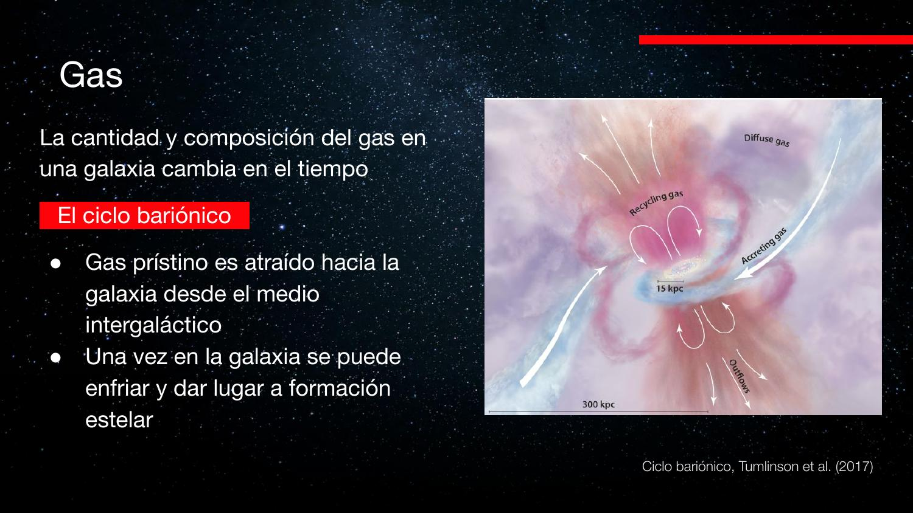
El ciclo bariónico es un sistema con realimentación y un "buffer" de combustible: entra gas prístino (input), se consume formando estrellas, y las supernovas reinyectan parte (recycling) o lo expulsan (outflow, una pérdida). La cantidad de gas en el buffer determina la tasa de formación estelar y, por lo tanto, la trayectoria del color. Si el buffer se vacía (outflows fuertes o sin acreción), la galaxia se "apaga" y queda roja.
Enriquecimiento, reciclaje y simulaciones
Las supernovas siembran metales; el gas reciclado forma estrellas levemente más rojas. Lo vemos en simulaciones cosmológicas.
El material que cae desde el medio intergaláctico es prístino (hidrógeno y helio). Pero el material que las supernovas expulsan está enriquecido: lleno de "metales" (en jerga astronómica, todo elemento más pesado que el helio). Si ese material enriquecido se recicla y forma nuevas estrellas, esas estrellas tienen mayor metalicidad y nacen un poco más rojas.
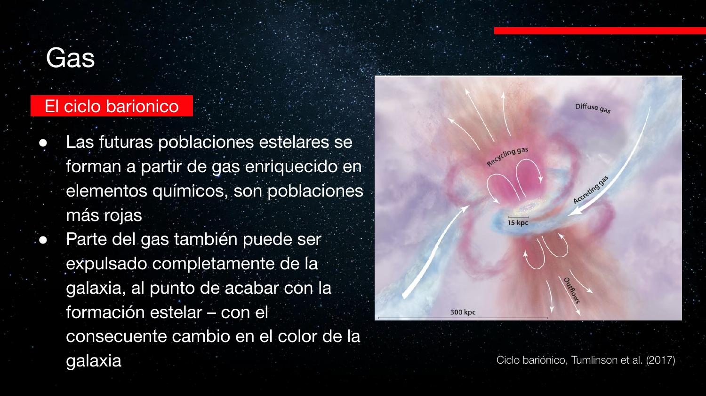
Pregunta de un estudiante: no es que se formen más estrellas rojas, sino que a igual masa, una estrella con más metales es más roja. El material enriquecido es más sensible a la presión de radiación: para la misma gravedad se necesita menos presión para el equilibrio, así que la estrella queda más fría (más roja). El efecto es sutil pero importante: cada generación es levemente más roja que la anterior.
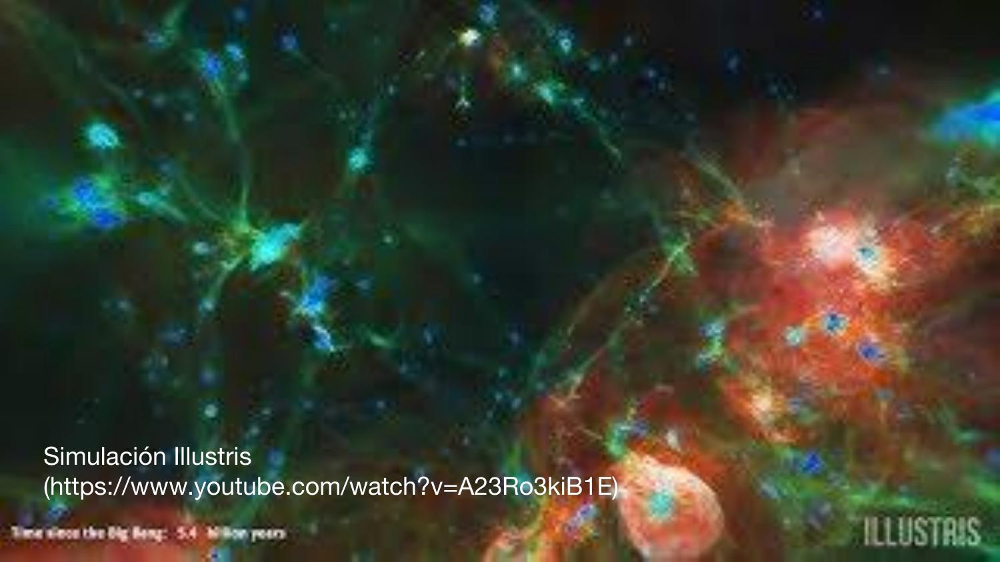
Resumiendo el efecto del ciclo bariónico sobre el color: trae material nuevo que repuebla la curva azul (estrellas jóvenes); esas explotan o evolucionan, enriquecen el gas y dan una siguiente generación un poco más roja, que a su vez también termina poblando la curva roja. El ciclo bariónico controla la velocidad con que una galaxia se enrojece o se mantiene azul.
Líneas de emisión: la huella del gas
El gas ionizado emite en longitudes de onda discretas: una huella digital química que nos deja leer galaxias lejanísimas.
El gas tiene otro efecto observable: las líneas de emisión. No cambian mucho el color, pero entregan información valiosísima. El mecanismo: la luz de las estrellas ioniza el gas. Un fotón con la energía exacta hace saltar un electrón a un nivel superior; cuando el electrón decae, reemite la diferencia de energía como luz —pero solo en longitudes de onda discretas, las que corresponden a las transiciones permitidas.
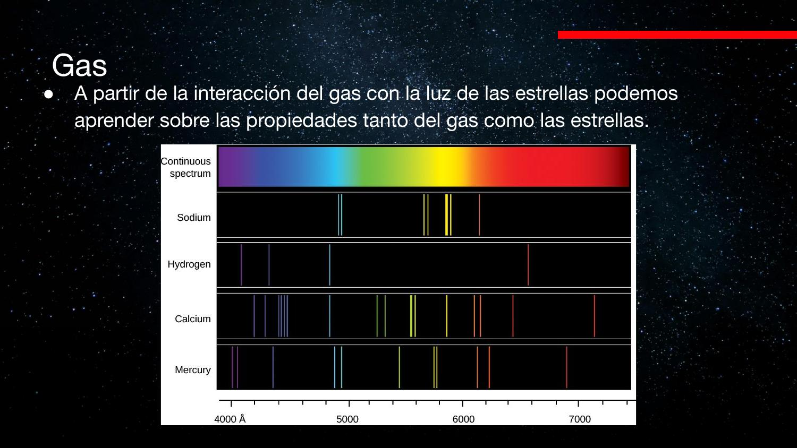
Esto es una herramienta potentísima para el universo lejano. La primera imagen pública del JWST incluía el espectro de una galaxia chiquitita cuya luz fue emitida cuando el universo tenía apenas ≈ 600 millones de años: ya mostraba líneas de oxígeno, hidrógeno y neón.
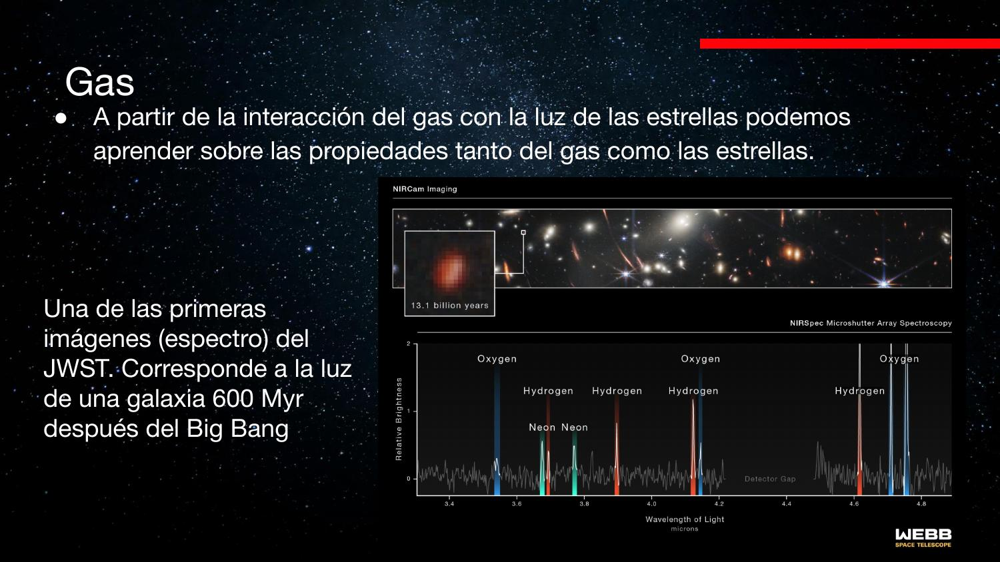
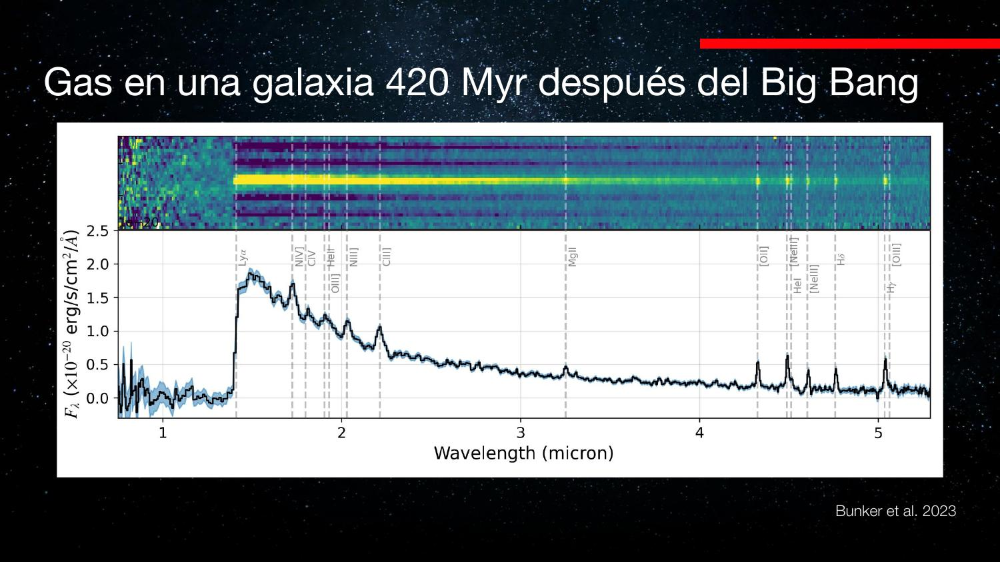
Por el corrimiento al rojo: la expansión del universo estira la luz hacia longitudes de onda mayores. Cuanto más corrida al rojo, más lejos —y como la luz viaja a velocidad finita, más atrás en el tiempo. En el caso de los 420 Myr, la luz lleva viajando ≈ 13.400 millones de años.
El polvo: enrojecimiento y reemisión IR
Granos de ~2 µm absorben el azul y dejan pasar el rojo. Luego reemiten esa energía en el infrarrojo lejano.
El polvo interestelar —mezclado con el gas— se forma en las supernovas y en etapas avanzadas de la evolución estelar. Son moléculas grandes, de hasta ≈ 2 micrones. La intuición física: el grano es como un "ladrillo" en el camino del fotón. Si el fotón tiene longitud de onda más corta que el grano, choca y es absorbido; si es más larga, se difracta alrededor y pasa.
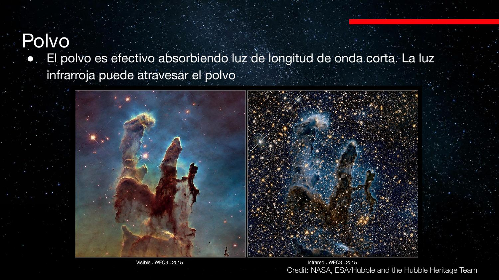
Consecuencia clave: con muy poco polvo se cambia mucho el color de una galaxia. Una galaxia joven con polvo y una vieja sin polvo pueden verse igual de rojas —el polvo "imita" el efecto de las poblaciones viejas. ¿Cómo distinguirlas?
El polvo hace algo más: la energía azul que absorbe no desaparece. Los granos se calientan y, como cuerpos tibios, reemiten esa energía en el infrarrojo lejano / radio. Esa joroba en el IR es la firma que delata al polvo.
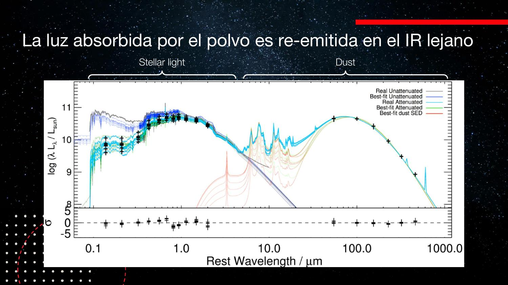
El polvo es un filtro pasa-bajos en frecuencia (pasa-altos en longitud de onda): atenúa las componentes de longitud de onda corta. Y por conservación de energía, lo que "filtra" no se pierde: reaparece desplazado a otra banda (el IR). Distinguir "rojo por edad" de "rojo por polvo" es desambiguar dos causas que producen la misma salida en el visible, observando una segunda banda (el IR) donde solo una de ellas deja firma.
El AGN: el agujero negro central
Cuando el agujero negro supermasivo se alimenta, brilla en todo el espectro y puede encandilar a la galaxia entera.
La última componente: el agujero negro supermasivo del centro. Hoy sabemos que toda galaxia suficientemente grande tiene uno. El de la Vía Láctea tiene ≈ 4 millones de masas solares; el de M87, ≈ 2.400 millones (≈ 500 veces el nuestro).
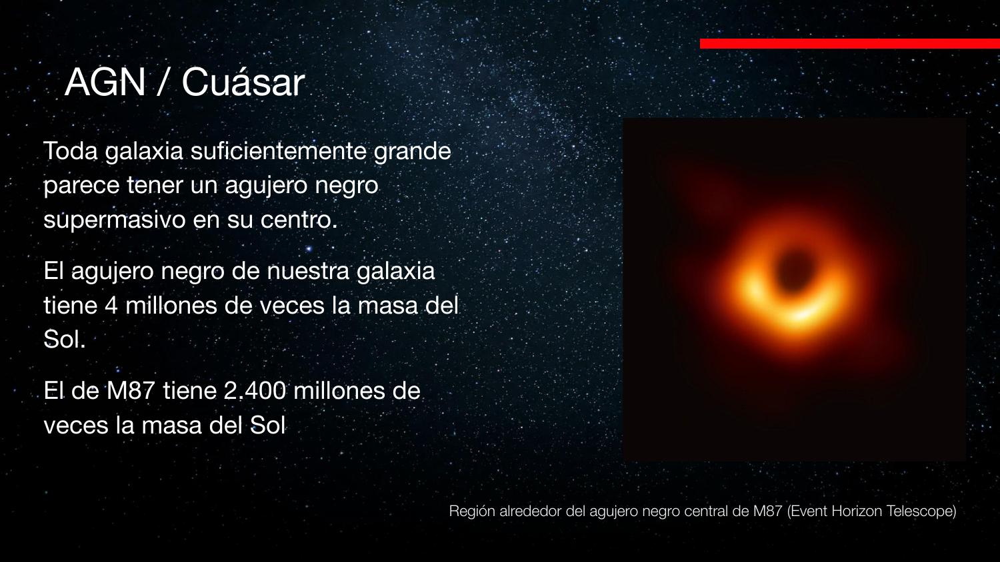
La clave está en la palabra activo (AGN, Active Galactic Nucleus). Cuando una nube de gas cae hacia el agujero negro, se aprieta en una región diminuta (escala del Sistema Solar) y se calienta enormemente, formando un disco de acreción que es uno de los objetos más brillantes del universo. Su brillo puede opacar a la galaxia entera: a veces solo se ve el puntito central.
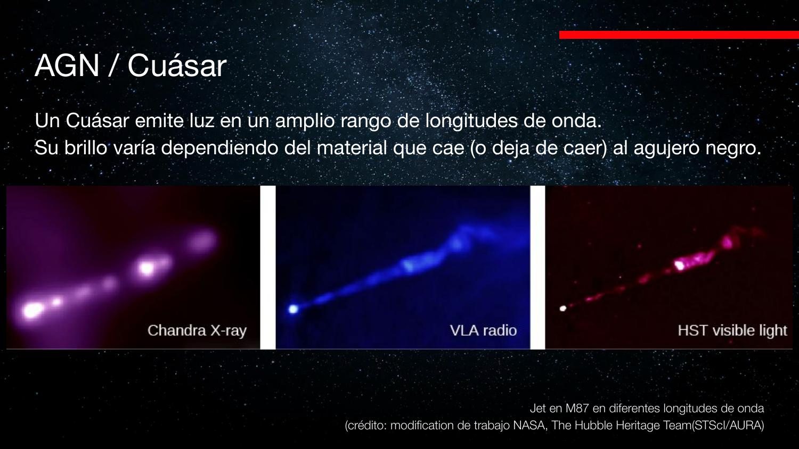
El AGN puede cambiar por completo los colores de una galaxia mientras está activo, y lo hace en todas las longitudes de onda. Pero solo dura mientras el agujero negro tenga material que tragar: cuando se le acaba, el AGN se apaga y reaparece la galaxia. No todos tienen jet; lo que siempre domina el brillo es el disco de acreción de material cayendo.
Síntesis: cómo cambia una galaxia
Las cuatro componentes, integradas en una sola historia.
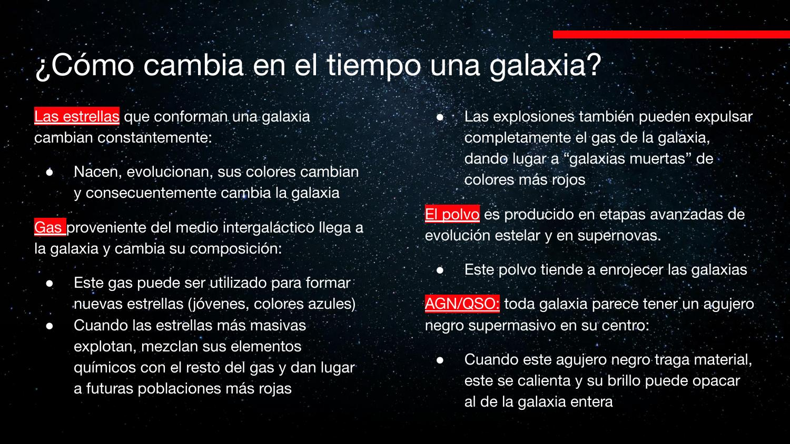
- Estrellas: nacen azules (las masivas dominan el brillo) y, al evolucionar fuera de la secuencia principal, enrojecen. La tendencia natural es el enrojecimiento.
- Gas: el combustible de las estrellas nuevas. El ciclo bariónico (acreción prístina, reciclaje, outflows) decide cuántas nacen y cuán rápido se enrojece la galaxia. Las supernovas siembran metales → generaciones cada vez más rojas.
- Polvo: se forma en supernovas y estrellas evolucionadas; enrojece absorbiendo el azul y se delata reemitiendo en el IR. Permite confundir "joven con polvo" con "vieja sin polvo", salvo que se observe en el IR/radio.
- AGN: presente en toda galaxia grande, cambia dramáticamente el color cuando se activa, en todo el espectro —pero solo por periodos cortos.
Una galaxia es un sistema dinámico: lo que vemos es la suma cambiante de cuatro componentes. La pregunta "¿cómo cambia una galaxia?" se responde siguiéndole la pista al color, que integra toda esta física. La próxima clase (a cargo de la profesora Charlotte Simmons) continúa el estudio de las galaxias.
Conceptos clave
Tabla de repaso rápido.
| Concepto | Qué es / valor | Por qué importa |
|---|---|---|
| Componentes visibles | Estrellas, gas, polvo, AGN | Lo que cambia es lo que vemos; la materia oscura no se ve |
| Más caliente = más azul | Ley de Wien: | Define los colores en el diagrama color–magnitud |
| Secuencia principal | Fusión de H → He en el núcleo | Equilibrio entre presión de radiación y gravedad |
| Vida en la SP | Masivas viven ≈10⁷ años; el Sol ≈10¹⁰; las de baja masa, más que el universo | |
| Gigante roja | Fusión de H en una cáscara externa | La estrella se infla y se enrojece al salir de la SP |
| Enana blanca | Presión de degeneración (Pauli) | Núcleo desnudo; se sostiene sin fusión |
| IMF | Muchas de baja masa, pocas de alta masa | Pero las pocas azules dominan el brillo (factor 10⁴) |
| SED jóvenes/viejas | Jóvenes: 912–4000 Å (UV/azul) | El azul se apaga si cesa la formación estelar |
| Elípticas vs espirales | Rojas "muertas" vs azules con brazos | Color = historia de formación estelar |
| Ciclo bariónico | Acreción · reciclaje · outflows | Controla la tasa de formación y el ritmo de enrojecimiento |
| Barión (en astronomía) | Toda materia que no es oscura | Incluye electrones (que no son bariones en rigor) |
| Metalicidad | Elementos más pesados que el He | A igual masa, más metales ⇒ estrella más roja |
| Líneas de emisión | Huella digital química del gas; miden composición y z | |
| Polvo | Granos de ≈ 2 µm | Absorbe el azul, deja pasar el rojo; reemite en el IR |
| Enrojecimiento | Confunde joven-con-polvo y vieja-sin-polvo | |
| AGN / cuásar | Disco de acreción de un BH supermasivo | Brillo enorme en todo el espectro, pero temporal |
| M87 | BH ≈ 2.400 millones M☉ | Imagen del Event Horizon Telescope; jet multibanda |
Exámenes de práctica
10 exámenes de 5 preguntas (3 de alternativas autocorregibles + 2 de respuesta escrita).
- Examen 01Las componentes de una galaxia
- Examen 02El diagrama color–magnitud
- Examen 03Evolución estelar y secuencia principal
- Examen 04La función inicial de masa
- Examen 05El espectro: jóvenes vs viejas
- Examen 06Secuencia morfológica y colores
- Examen 07El gas y el ciclo bariónico
- Examen 08Enriquecimiento y metalicidad
- Examen 09Líneas de emisión y galaxias lejanas
- Examen 10Polvo y AGN (integrador)